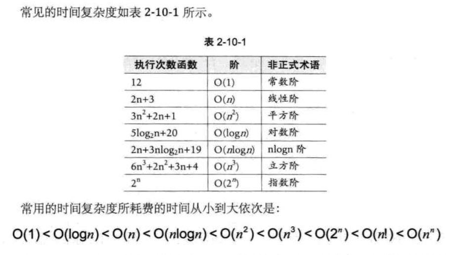
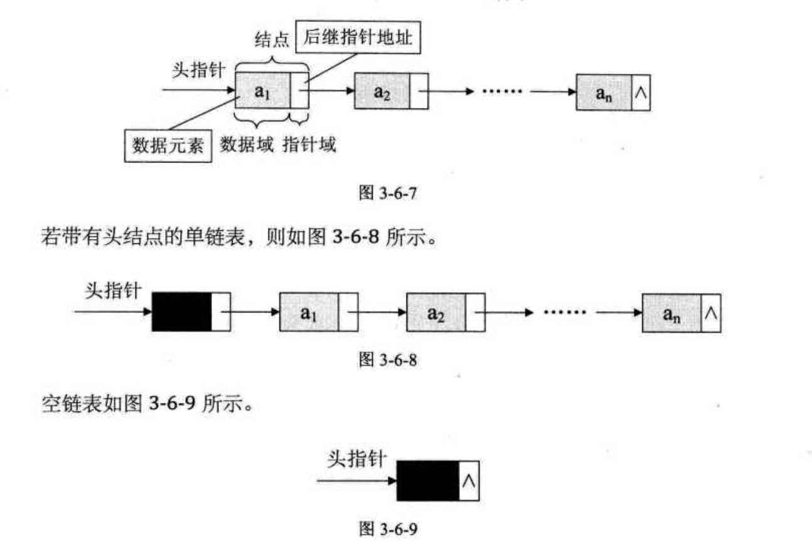
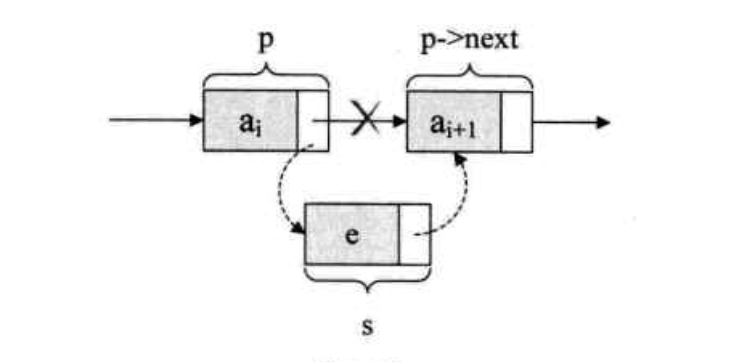
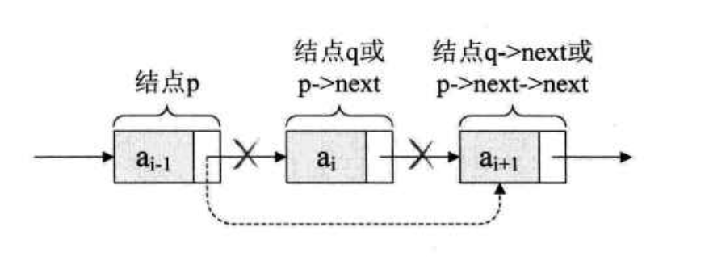

心血来潮，复习了一下算法，一来是这阵子在看内核代码的时候发现有很多地方有用到，二是因为以后应该也会有很多地方用到，未雨绸缪~
而且我相信再看一遍，我有信心学好它！
算法的概念
算法是解决特定问题求解步骤的描述，在计算机中表现为指令的有序序列，并且每条指令表示一个或多个操作。
画外音：既然是固定求解步骤的话，难道还怕记不住不成😠
- 算法的基本特性：输入、输出、有穷性、确定性和可行性。
时间复杂度
①
T(n) = O(f(n))
其中 f(n) 是问题规模 n 的某个函数。
②
推导大 O 阶方法：
- 用常熟 1 取代运行时间中的所有加法常数。
- 在修改后的运行次数函数中，只保留最高阶项。
- 如果最高阶项存在且不是 1 ，则去除与这个项相乘的常数。
得到的结果就是大 O 阶。
③
常见时间复杂度：

可能比较难理解的是对数阶的大 O 计算，举个列子吧，
int count = 1;
while (count < n)
{
count = count * 2;
/* 时间复杂度为 O(1) 的程序步骤序列 */
}
解释：由于每次 count 乘以 2 之后，就距离 n 更近了一分。也就是说，有多少个 2 相乘后大于 n ，则会退出循环。由 2^x = n 得到 x = ㏒2[n]。所以这个循环的时间复杂度为 O(㏒n)。
④
线性表
线性表的数据对象集合为{a1,a2, … ,an}，每个元素的类型均为 DataType。其中，除第一个元素 a1 外，每一个元素有且只有一个直接前驱元素，除了最后一个元素 an 外，每一个元素有且只有一个后继元素。数据元素之间的关系是一对一的关系。
线性表的顺序存储结构：
代码：
#define MAXSIZE 20 /*存储空间初始分配量*/
typedef int ElemType;
typedef struct
{
ElemType data[MAXSIZE]; /*数组存储数据元素，最大值为 MAXSIZE*/
int length; /*线性表当前长度*/
}SqList;
描述顺序结构需要三个属性：
- 存储空间的起始位置：数组 data，它的存储位置就是存储空间的存储位置。
- 线性表的最大存储容量：数组长度 MAXSIZE。
- 线性表的当前长度：length。
一般会有如下操作：
InitList(*L) 初始化操作，建立一个空的线性表 L。
ListEmpty(L) 若线性表为空，返回 true，否则返回 false。
ClearList(*L) 将线性表清空。
GetElem(L,i,*e) 将线性表 L 中的第 i 个位置元素值返回给 e。
LocateElem(L,e) 在线性表 L 中查找与给定值 e 相等的元素，如果查找成功，返回该元素在表中序号表示成功；否则，返回 0 表示失败。
ListInsert(*L,i,e) 在线性表 L 中的第 i 个位置插入新元素 e。
ListDelete(*L,i,*e) 删除线性表 L 中第 i 个位置元素，并用 e 返回其值。
ListLength(L) 返回线性表 L 的元素个数。
4.1 获得元素操作 GetElem(L,i,*e)
#define OK 1
#define ERROR 0
#define TRUE 1
#define FALSE 0
typedef int Status;
/*Status 是函数的类型，其值是函数结果状态代码，如 OK 等*/
/*初始条件：顺序线性表 L 已存在，1 <= i <= ListLength(L)*/
/*操作结果：用 e 返回 L 中第 i 个数据元素的值*/
Status GetElem(SqList L, int i, ElemType *e)
{
if(L.Length==0 || i<1 || i>L.length)
return ERROR;
*e = L.data[i-1];
return OK;
}
4.2 插入操作 ListInsert(*L,i,e)
插入算法的思路：
- 如果插入位置不合理，抛出异常；
- 如果线性表长度大于等于数组长度，则抛出异常或动态增加容量。
- 从最后一个元素向前遍历到第 i 个位置，分别将它们都向后移动一个位置。
- 将要插入的元素填入位置 i 处。
- 表长加 1。
1 | /*初始条件：顺序线性表 L 已存在，1 <= i <= ListLength(L)*/ |
4.3 删除操作 ListDelete(*L,i,*e)
删除算法的思路：
- 如果删除位置不合理，抛出异常。
- 取出删除位置。
- 从删除元素位置开始遍历到最后一个元素位置，分别将它们都向前移动一个位置。
- 表长度减 1。
1 | /*初始条件：顺序线性表 L 已经存在， 1 <= i <= ListLength(L)*/ |
4.4 线性表顺序存储结构的时间复杂度
读数据 O(1)
插入 O(n)
删除 O(n)
4.5 线性表顺序存储结构的优缺点
优点：
- 无需为表示表中元素之间的逻辑关系而增加额外的存储空间
- 可以快速地存取表中任一位置的元素
缺点：
- 插入和删除操作需要移动大量元素
- 当线性表长度变化较大时，难以确定存储空间的容量
- 造成存储空间的“碎片”
⑤
线性表的链式存储结构
链式存储结构就是为了解决顺序存储结构插入和删除需要移动大量元素的不足而发明的。
单链表的存储结构：
1 | /*线性表的单链表存储结构*/ |
以上结构成为结点（Node），结点由存放数据元素的数据域和存放后继结点地址的指针域组成。
单链表的存储示意图：

有时，我们为了更加方便地对链表进行操作，会在单链表的第一个结点前附设一个结点，成为头结点。头结点的数据域可以不存储任何信息，头结点的指针域存储指向第一个结点的指针。
5.1 单链表的读取 GetElem(L,i,*e)
在线性表的顺序存储结构中，我们要计算任意一个元素的存储位置是很容易的。但在单链表中，由于第 i 个元素到底在哪没有办法一开始就知道，必须从头开始找。因此，对于单链表实现获取第 i 个元素的数据的操作 GetElem，在算法上，相对要麻烦一些。
获得单链表第 i 个数据的算法思路：
- 声明一个结点 p 指向链表第一个结点，初始化 j 从 1 开始；
- 当 j < i 时，就遍历链表，让 p 的指针向后移动，不断指向下一结点，j 累加 1；
- 若到链表末尾 p 为空，则说明第 i 个元素不存在；
- 否则查找成功，返回结点 p 的数据。
1 | /*初始条件：单链表 L 已存在，1 <= i <= ListLength */ |
5.2 单链表的插入操作 ListInsert(*L,i,e)

单链表第 i 个数据插入结点的算法思路：
- 声明一结点 p 指向链表第一个结点，初始化 j 从 1 开始；
- 当 j < i 时，就遍历链表，让 p 的指针向后移动，不断指向下一结点，j 累加 1 ；
- 若到链表末尾 p 为空，则说明第 i 个元素不存在；
- 否则查找成功，在系统中生成一个空结点 s ；
- 将数据元素 e 赋值给 s->data;
- 单链表的插入标准语句 s->next = p->next; p->next = s，不可颠倒；
- 返回成功。
1 | Status ListInsert(LinkList *L, int i, ElemType e) |
注意：s->next = p->next; p->next = s; 这两句的顺序不能调换！！！
如果先 p->next = s; 再 s->next = p->next;会怎样？哈哈哈，因为此时第一句会使得将 p->next给覆盖成 s 的地址了。那么s->next = p->next，其实就等于 s->next = s,这样真正的拥有 a(i+1) 数据元素的结点就没了上级了。这样的操作就是失败的，造成了临场掉链子的尴尬局面。所以这两句是无论如何不能反的！
5.3 单链表的删除ListDelete(*L,i,*e)

单链表第 i 个数据删除结点的算法思路：
- 声明一结点 p 指向链表第一个结点，初始化 j 从 1 开始；
- 当 j < i 时，就遍历链表，让 p 的指针向后移动，不断指向下一个结点，j 累加 1；
- 若到链表末尾 p 为空，则说明第 i 个元素不存在；
- 否则查找成功，将欲删除的结点 p->next 赋值给 q；
- 单链表的删除标准语句
p->next = q->next; - 将 q 结点中的数据赋值给 e，作为返回；
- 释放 q 结点；
- 返回成功。
1 | Status ListDelete(LinkList *L, int i, ElemType *e) |
5.4 单链表的整表创建
1 | /*随机产生 n 个元素的值，建立带表头结点的单链线性表 L (尾插法)*/ |
5.5 单链表的整表删除
当我们不打算使用这个链表时，我们需要把它销毁，其实也是在内存中将它释放掉，以便于留出空间给其他程序或者软件使用。
单链表整表删除的算法思路如下：
1.声明一结点 p 和 q;
2.将第一个结点赋值给 p；
3.循环：
- 将下一结点赋值给 q；
- 释放 p；
- 将 q 赋值给 p。
实现代码算法如下：
1 | /*初始化条件：顺序线性表 L 已存在，操作结果： 将 L 重置为空表*/ |
⑥